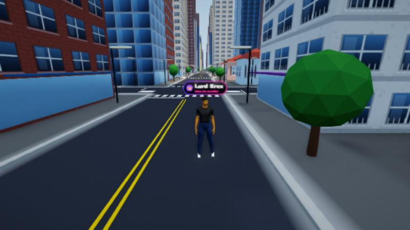
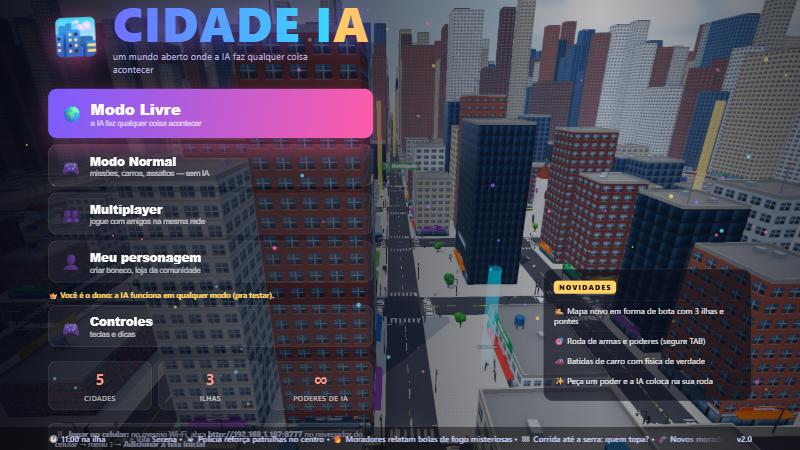
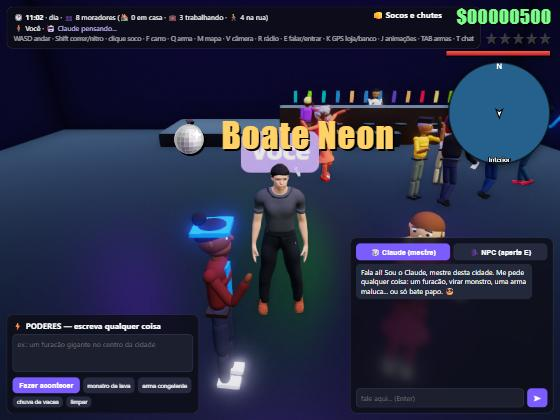

Não instala nada no Windows
É uma pasta com arquivos. Não pede permissão de administrador, não mexe no registro e não roda nada escondido quando você não está jogando. Pra remover, apague a pasta.
Uma ilha inteira de mundo aberto onde você pede qualquer coisa e a IA faz acontecer.
Dirija, explore, assalte um banco, crie seu personagem ou peça pra IA um furacão de vacas. Tudo dentro de uma ilha em forma de bota com cinco cidades ligadas por pontes.



Peça qualquer coisa em português: monstros, chuva de carros, armas malucas, construções. Vira até item na sua roda de poderes.
Pra quem não tem chave de IA: armas, clima, transformações, monstros, caos e coisas úteis, de graça.
Modelados no Blender, com física de batida, drift e suspensão. Seis são raros e aparecem com 🌟 no radar.
Lojas, bancos, boate, cinema, museu, academia. Quase todos dá pra assaltar, se você tiver coragem.
Dança, samba, caratê, yoga, sentar, dormir. E um editor com linha do tempo pra criar as suas.
Boneco realista ou clássico, pele, roupa e acessórios. Ou envie seu próprio modelo 3D (.glb, .fbx, .obj).
Jogue com todo mundo, no PC ou no celular. Chat com balão em cima da cabeça, chat de voz com quem está perto, denúncia e moderação.
Joystick e botões de toque. Abra no celular pelo endereço que aparece no menu e adicione à tela inicial.
O jogo funciona sem IA. Se quiser os poderes infinitos e conversar de verdade com os moradores, cole a chave de API da IA que você preferir.
115 poderes prontos, editor pra programar seus próprios poderes em JavaScript, e moradores com falas gravadas e rotina de casa, trabalho e lazer.
Poderes inventados na hora, mundo em branco pra criar do zero no Modo Livre, chat com o "mestre do jogo" e moradores que conversam com você.
Explicado sem enrolação: o que é seguro e o que merece atenção.
É uma pasta com arquivos. Não pede permissão de administrador, não mexe no registro e não roda nada escondido quando você não está jogando. Pra remover, apague a pasta.
O jogo inteiro está em arquivos de texto que dá pra abrir e ler: index.html (o jogo) e servidor.py (o servidor). Nada é compactado ou escondido.
A chave fica só no seu navegador. O servidor do jogo usa a chave no pedido e não grava em arquivo nem no registro de atividade. Ela vai direto do seu PC pra empresa da IA.
Poderes, monstros e construções existem só dentro da página do jogo. A página roda no navegador, que não deixa ela abrir seus arquivos nem seus programas.
Pra multiplayer e celular funcionarem, o servidor fica visível pra quem está no seu Wi-Fi. Quem entra por lá joga, mas não usa a sua IA.
Se você colocar sua chave jogando pelo servidor de um amigo, ela passa pelo computador dele. Só faça isso com quem você confia.
O Jogar.bat não tem assinatura digital, então o Windows pode mostrar "o Windows protegeu o computador". Isso é normal pra programas pequenos sem assinatura. Abra o arquivo no Bloco de Notas pra ver que ele só inicia o jogo.
É um projeto pessoal, feito com cuidado, mas ninguém de fora revisou o código. Baixe só do link oficial desta página.
Clique em ⬇ Baixar pra Windows. Vem um arquivo só: CidadeIA-Instalador.exe.
Responda Sim. Se o Windows mostrar "O Windows protegeu o computador", clique em Mais informações → Executar assim mesmo (aparece porque o jogo é novo e não tem assinatura paga). Não precisa instalar Python nem nada.
O jogo abre sozinho e o ícone Cidade IA fica na área de trabalho e no Menu Iniciar. Da próxima vez é só clicar nele. Pra remover: Menu Iniciar → Cidade IA → Desinstalar.
No jogo, abra o painel ⚡ Poderes e toque em 🔑 Minha chave. Cole a chave da IA que você usa. Sem chave, tudo funciona com os poderes prontos.
Não. O jogo é grátis. Só a IA pode ter custo, e é cobrada pela empresa da IA na sua própria conta. O Groq e alguns planos do Gemini têm uso gratuito com limite.
O jogo roda em qualquer sistema com Python, mas os atalhos (.bat) são de Windows. No Mac ou Linux, rode python3 servidor.py dentro da pasta e abra o endereço que aparecer.
O celular joga pelo seu PC. Deixe o jogo aberto no PC, conecte o celular no mesmo Wi-Fi e abra o endereço que aparece no menu inicial (algo como http://192.168.1.10:8777). Depois use "Adicionar à tela inicial".
Não, se estiverem no mesmo Wi-Fi: eles entram pelo navegador no endereço do seu PC e escolhem Multiplayer. Pra jogar de casas diferentes, cada um precisa da própria cópia.
No jogo, aperte Esc e diminua "Gráficos" e "Distância de visão". No celular isso já é feito sozinho.
O link de download vai aparecer aqui assim que o arquivo for publicado.